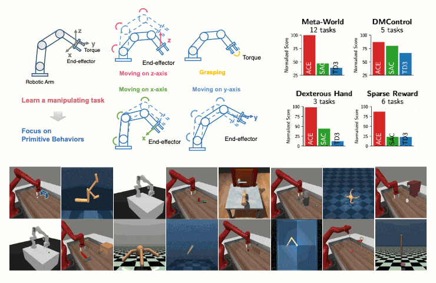
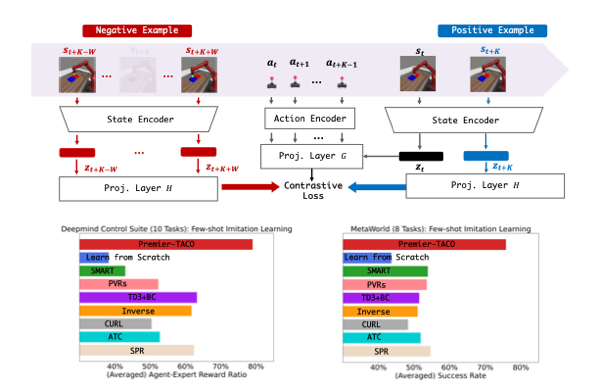
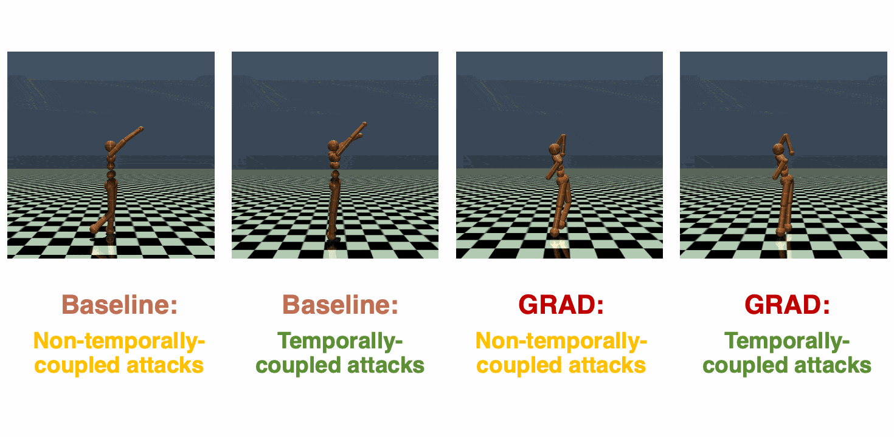
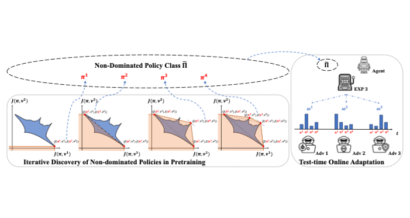
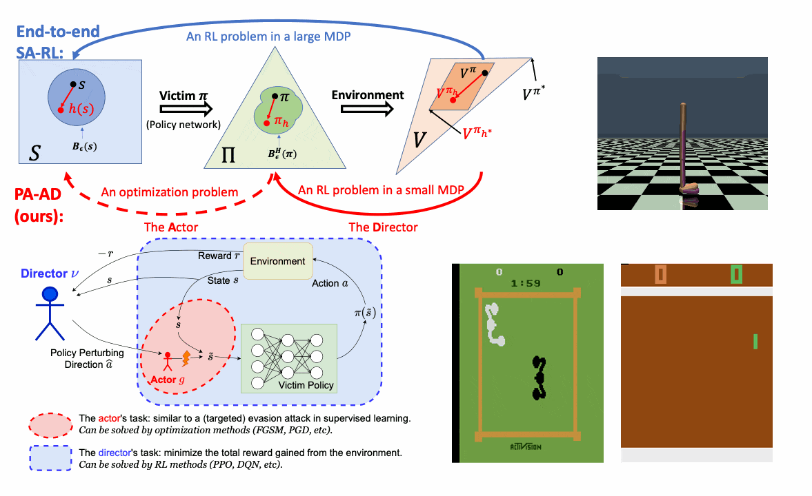
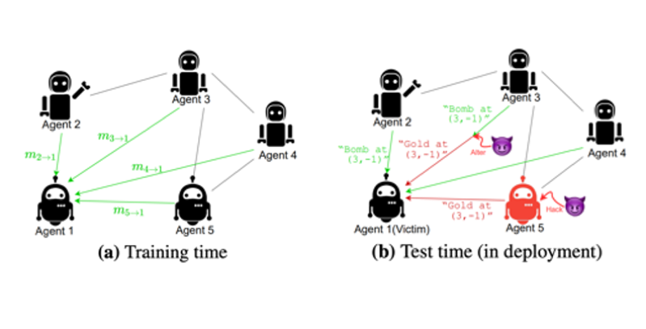

Yongyuan Liang Yongyuan (Cheryl) Liang's research focuses on developing robust, versatile, and efficient intelligent agents with strong generalization capacity for AI systems.
Reinforcement Learning (robust RL, offline RL, IRL, RLHF)
Foundation models for policy learning (generative models, representation)
Trustworthy LLM agents, for planning and reasoning
She joins UMD CS as a PhD student, advised by Furong Huang and also works closely with Huazhe Xu .
News
2024
I'm looking for part-time/full-time internship opportunities . Feel free to reach out if you're interested in my research.
Long-term
I'm open to potential collaboration with graduate/undergraduate students. Please drop me an email if you'd like to have a (virtual) coffee chat :)
Mar' 24
Have been selected as a ICLR 2024 Financial Assistance Awardee.
Feb' 24
Have been awarded a Dean’s Fellowship.
Jan' 24
Three papers to appear in ICLR 2024, including two spotlights and one poster.
Selected Publications & Preprints
[* denotes equal contribution]

ACE: Off-Policy Actor-Critic with Causality-Aware Entropy Regularization
Yongyuan Liang* , Yan Zeng, Yu Luo, Guowei Xu, Jiawei Guo, Ruijie Zheng, Furong Huang, Fuchun Sun, Huazhe Xu
arXiv , 2024
Project Page /
Paper /
Code /
Twitter

PREMIER-TACO is a Few-Shot Policy Learner: Pretraining Multitask Representation via Temporal Action-Driven Contrastive Loss
Yongyuan Liang , Xiyao Wang, Shuang Ma, Hal Daumé III, Huazhe Xu, John Langford, Praveen Palanisamy, Kalyan Basu, Furong Huang
arXiv , 2024NeurIPS Workshop FMDM , 2023
Project Page /
Paper /
Code /
Twitter
DrM: Mastering Visual Reinforcement Learning through Dormant Ratio Minimization
Yongyuan Liang* ,
Xiyao Wang, Zhecheng Yuan, Tianying Ji, Yu Luo, Xiaoyu Liu, Jiaxin Yuan, Pu Hua, Shuzhen Li, Yanjie Ze, Hal Daumé III, Furong Huang, Huazhe Xu
ICLR , 2024 (Spotlight - Top 5%) CORL Workshop PRL , 2023
Project Page /
Paper /
Code /
Twitter

Game-Theoretic Robust Reinforcement Learning Handles Temporally-Coupled Perturbations
Yongyuan Liang , Yanchao Sun, Ruijie Zheng, Xiangyu Liu, Benjamin Eysenbach, Tuomas Sandholm, Furong Huang, Stephen Marcus McAleer
ICLR , 2024
ICML Workshop AdvML-Frontiers , 2023
Project Page /
Paper /
Code /
Twitter
Efficient Adversarial Training without Attacking: Worst-Case-Aware Robust Reinforcement Learning
Yongyuan Liang* , Yanchao Sun*, Ruijie Zheng, Furong Huang
NeurIPS , 2022
NeurIPS Workshop SafeRL , 2021 (Spotlight Talks) Paper /
Code /
Slides

Beyond Worst-case Attacks: Robust RL with Adaptive Defense via Non-dominated Policies
Yongyuan Liang , Furong Huang
ICLR , 2024 (Spotlight - Top 5%) NeurIPS Workshop MASEC , 2023
Project Page /
Paper /
Code /
Twitter

Who Is the Strongest Enemy? Towards Optimal and Efficient Evasion Attacks in Deep RL
Yongyuan Liang , Furong Huang
ICLR , 2022
NeurIPS Workshop SafeRL , 2021 (Best Paper Award) Project Page /
Paper /
Code

Certifiably Robust Policy Learning against Adversarial Communication in Multi-agent Systems
Yongyuan Liang , Soheil Feizi, Sumitra Ganesh, Furong Huang
ICLR , 2023
Paper /
Code
Professional Service
Conference Reviewer: ICML(2022, 2023, 2024), NeurIPS(2021, 2022, 2023), ICLR(2021, 2022, 2023, 2024), AAAI(2020)
Workshop Program Committee: FMDM 2023 at NeurIPS
Misc
My name is a bit tricky to pronounce for some, so just call me Cheryl [ˈʃerəl].
I've been playing the violin for over 10 years and was a violinist in the university orchestra.